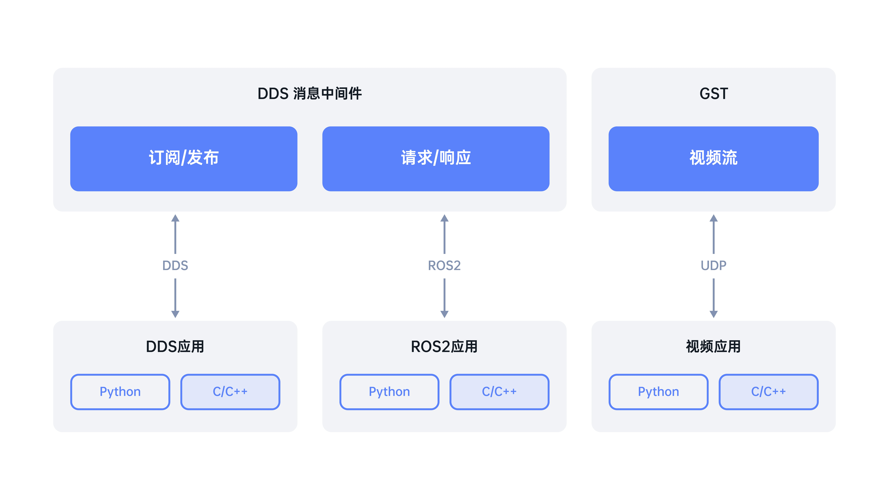

SDK概述

当前软件版本还不支持 GST 视频流传输。
G1 采用 DDS 作为消息中间件，主要的数据交互采用两种模式： 订阅/发布和请求/响应。
-
订阅/发布： 接收方订阅某个消息，发送方根据订阅列表向接收方发送消息，主要用于中高频或持续的数据交互。
-
请求/响应： 问答模式，通过请求实现数据获取或操作。用于低频或功能切换时的数据交互。
请求响应接口的调用方式：API 调用，函数式调用
-
API 调用： 类似 restapi，请求发送时填入请求内容和请求话题, 在对应的响应话题接受回复，回复采用广播模式，根据 UUID 确定请求和响应的对应关系。
-
函数式调用： API 调用模式的语法糖，将 API 调用封装成函数调用，方便用户使用。
开发套件：
unitree_sdk2: C++开发库